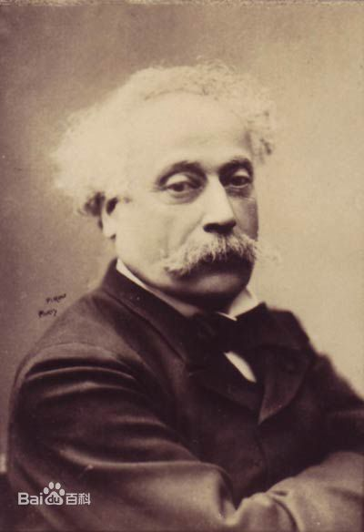

|
|
遇见书吧 |

|
|
|
遇见书吧 |
|
| 1、作者介绍 2、创作背景 3、成就影响 4、名人点评 |
1、作者介绍

小仲马，法国小说家，戏剧家。大仲马的私生子。7岁时大仲马才认小仲马
其为子，但仍拒不认其母为妻。私生子的身世使小仲马在童年和少年时代受尽世人的讥诮。成年后痛感法国资本主义社会的淫靡之风造成许多像他们母子这样的被侮辱与被损害者，决心通过文学改变社会道德。他曾说：“任何文学，若不把完善道德、理想和有益作为目的，都是病态的、不健全的文学。”这是他文学创作的基本指导思想。而探讨资产阶级的社会道德问题，则是贯穿其文学创作的中心内容。
2、创作背景
《茶花女》就是根据小仲马亲身经历所写的一部力作，这是是发生在他身边的一个故事。小仲马出生于法国巴黎，他的母亲卡特琳娜·拉贝是一个贫穷的缝衣女工，他的父亲大仲马当时只是一个默默无闻的抄写员，后来在戏剧创作和小说创作领域取得了巨大成就，成为法国十九世纪浪漫主义文学运动中的重要代表。随着社会地位和经济条件的不断改变，他的父亲大仲马越来越瞧不起缝衣女工卡特琳娜·拉贝。他混迹于巴黎的上流社会，整日与那些贵妇人、女演员厮混在一起，把小仲马母子俩忘得一千二净。可怜的缝衣女工只好一个人起早贪黑辛苦劳动，勉强维持母子两人的生计。小仲马七岁的时候，父亲大仲马通过打官司从卡特琳娜·拉贝手中夺取了对儿子的监护权，而那位勤劳善良的缝衣女工则就此失去了自己一手养大的儿子，重新成为一个孤苦伶仃的人。这使小仲马从小体验到了人世间的残酷和不平。使得小仲马热切地期望着自己也能像父亲一样，扬名于文坛。于是，他也开始从现实中取材，从妇女、婚姻等问题中寻找创作素材。《茶花女》就是根据他亲身经历所写的一部力作。这是是发生在小仲马身边的一个故事。1844年9月，小仲马与巴黎名妓玛丽·杜普莱西一见钟情。玛丽出身贫苦，流落巴黎，被逼为娼。她珍重小仲马的真挚爱情，但为了维持生计，仍得同阔佬们保持关系。小仲马一气之下就写了绝交信去出国旅行。1847年小仲马回归法国，得知只有23岁的玛丽已经不在人世，她病重时昔日的追求者都弃她而去，死后送葬只有两个人！她的遗物拍卖后还清了债务，余款给了她一个穷苦的外甥女，但条件是继承人永远不得来巴黎！现实生活的悲剧深深地震动了小仲马，他满怀悔恨与思念，将自己囚禁于郊外，闭门谢客，开始了创作之程。一年后，当小仲马24岁时，写下了这本凝集着永恒爱情的《茶花女》。名妓玛丽·杜普莱西向往上流社会生活，和小仲马母亲卡特琳娜·拉贝被大仲马抛弃，同时反映当时资本主义制度下的拜金现象，批判当时资本主义的黑暗。
3、成就影响
《茶花女》是第一部被引入中国的西方文学名著。《茶花女》问世后引起了极大震动，迅即被译成各种文字在世界上广为流传，使得千千万万读者为这则红颜薄命、男女悲欢的故事一洒同情之泪。只是在小说发表半个世纪之后的1898年，由林纾将其译成中文后，才为广大中国读者所知晓。据考证，1897年某日，从法国巴黎留学归来的王寿昌，前往访见正怀中国之忧的林纾，当时中国正遭列强入侵，林纾本人又遭中年丧偶之痛，对他说：“吾请与子译一书，子可以破岑寂，吾亦得以介绍一名著于中国，不胜于蹙额对坐耶。”林纾听后，思之有理，才请王氏口述，自己笔录，合译了小仲马的这部小说，题名为《巴黎茶花女遗事》。[11]
译本问世之后，对中国文学界大有冲击，使传统的才子佳人式爱情小说迅速被淘汰。中国的小说家们在《巴黎茶花女遗事》直接或间接的影响或摹仿之下，写出不少新意义、新结构的爱情小说。[12]
《茶花女》当时一经出版即轰动全中国，尽管上流社会恼怒地批评道：渲染妓女生活，是“淫荡堕落”、“低级下流”。但更多的人们则为真切感人的故事所征服。妓女玛格丽特的悲惨命运，她的灵魂悲号，以及男主人公阿芒痛彻肺腑的悔恨，都强烈地打动了读者的心弦。据统计，自1980年《茶花女》新译本问世以来，累计印数已达到百万余册。它开创了法国“落难女郎”系列的先河。
小仲马一举成名，他又把小说改编为剧本。1852年，五幕剧《茶花女》上演了。小仲马的处女作《茶花女》所取得的成功无疑是巨大的。虽然小仲马后来发表的无数优秀问题剧，今日爱好者都已寥寥无几，但这一部作品就足以使他取得如大仲马一样的名声。人们所津津乐道的“大小仲马”构成了法国文学史乃至世界文学史上罕见的“父子双壁”的奇观。1907年，中国留日学生组织“春柳社”，又把小说改编为剧本，在日本东京首次公开上演，这次演出还标志着中国话剧的开端。
《茶花女》后来被改编成歌剧，由意大利著名的音乐家威尔第作曲，影响更为深远。不久，无论是剧本还是小说，很快就跨越国界，流传到欧洲各国。它率先把一个混迹于上流社会的风尘妓女纳入文学作品描写的中心，开创了法国文学“落难女郎”系列的先河。而它那关注情爱堕落的社会问题的题裁，对19世纪后半叶欧洲写实主义问题小说的产生，写实性风俗剧的潮起，却产生了极为深远的影响。
4、名人点评
大前年病中无聊，随手捡起此书躺在床上重读，竟然一口气读完，且潸然泪下。年轻时读林琴南的译本《巴黎茶花女遗事》也曾感动过，但以我现在的年纪自以为不会这样投入了，想不到小仲马还能左右我的感情，所以我要把此书列为爱读的名单中。是什么感动了我呢？主要是这个处于社会底层的女子所受到的不公正的待遇。但妓女和公子哥的这类爱情故事在中国和外国的文学作品中是屡见不鲜的，《茶花女》的独特之处在于，它以大部分篇幅让茶花女的情人阿尔芒复述她的遭遇，最后又以她本人的日记更深地展示她的内心世界。这种叙事方式使读者感到格外亲切。
--学者袁行霈
《茶花女》影响确是不小，作为一种流行，却是一百年前的事情，当时正赶上戊戌变法失败，人心沮丧，改良的路行不通，大家只好将就着胡乱看小说。《茶花女》在中国本土的诞生，是生逢其时。
--作家叶兆言
可怜一卷《茶花女》，断尽支那荡子肠。
--教育家严复
自有古文以来，从不曾有这样长篇的叙事写情的文章。《茶花女》的成绩，遂替古文开辟一个新殖民地。[11]
--学者胡适